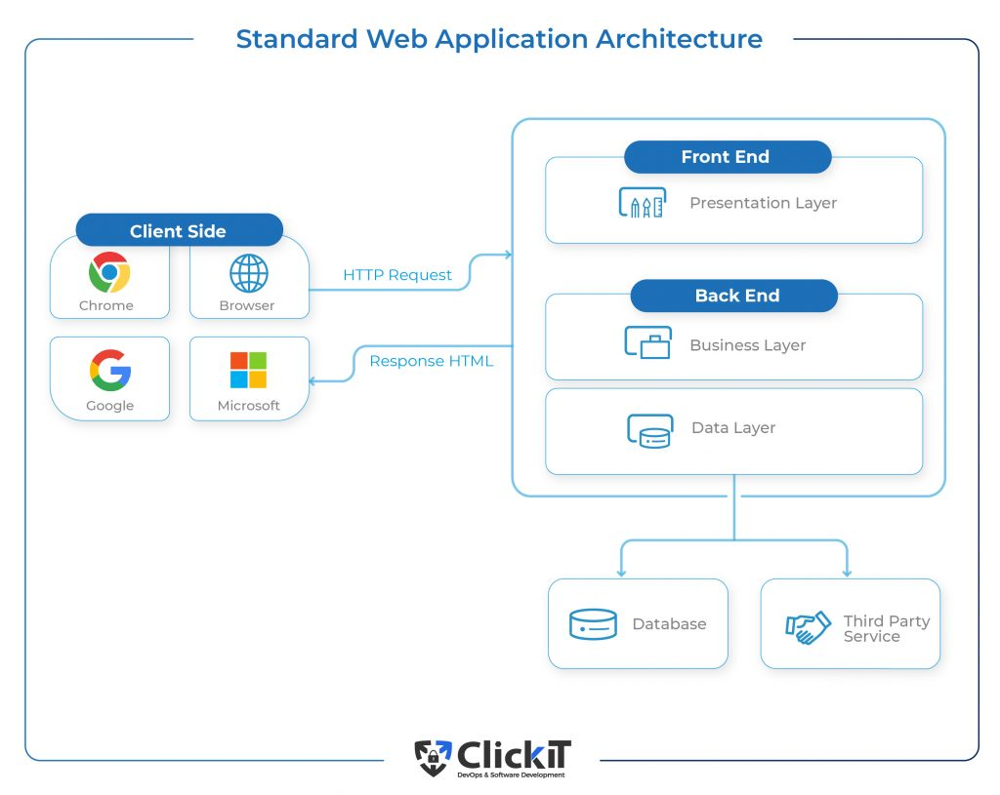

Learn About Web Development and Databases
What is a Web Application
Web applications are programs you use online through a web browser. Unlike regular software that you need to install on your computer, web applications run on servers and you can access them from any device with an internet connection. They work by using both server-side scripts, which manage data and processing, and client-side scripts, which handle the user interface and interactions. Examples of web applications include email services like Gmail, online document editors like Google Docs, and social media sites like Facebook. They are popular because they can be easily updated, work on different devices, and don't need to be installed on your computer.
Examples of web applications include Gmail, Amazon, Facebook, and Google Docs.


Interaction Between Web Applications and Back-End Databases
Web applications rely heavily on back-end databases to store, retrieve, and manage data. This interaction is crucial for providing dynamic and personalized user experiences. Here’s a detailed look at how this process works:

- GET
- POST
- PUT
- DELETE
User Request Initiation
When a user interacts with a web application—such as by submitting a form, logging in, or searching for information—their request is sent from their web browser to the web server hosting the application. Depending on the action, this request typically includes HTTP methods like
Server-Side Processing
The web server receives the request and passes it to the appropriate server-side application logic. This logic is usually written in languages such as Python, Ruby, PHP, Java, or Node.js. The server-side script processes the request and determines if it needs to interact with the database.
Database Query Formation
If the request involves data retrieval, storage, updating, or deletion, the server-side application constructs a query. This query is typically written in SQL (Structured Query Language) for relational databases like MySQL, PostgreSQL, or SQLite, or in a query language like MongoDB’s BSON for NoSQL databases.
Query Execution
Once the server-side script sends this query to the database management system (DBMS), the DBMS processes the query by accessing the database and performing the requested operation, such as fetching records, updating values, or deleting entries.
Database Response
The DBMS then returns the results to the server-side script, which processes the data received and formats it into a structure suitable for the client-side, often as JSON (JavaScript Object Notation) or XML (Extensible Markup Language). The formatted data is then sent back to the web browser through an HTTP response.
Sending Data Back to Client
The client-side script (usually written in JavaScript) receives this data and updates the web page accordingly, displaying the requested information or reflecting the changes made. Finally, the client-side script dynamically updates the web page based on the data received from the server, which might involve rendering new content, updating existing information, or displaying messages to the user.
Examples of Intranet and Internet in Businesses